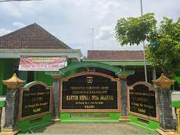

Karangjati
Desa karangjati adalah sebuah desa yang terletak di ngawi bagian timur dan berbatasan dengan kabupaten madiun.
Di karangjati terdapat beberapa wisata seperti bendungan,waduk dan kebun melon disaat musim kemarau.
Desa karangjati adalah sebuah desa yang terletak di ngawi bagian timur dan berbatasan dengan kabupaten madiun.
Di karangjati terdapat beberapa wisata seperti bendungan,waduk dan kebun melon disaat musim kemarau.